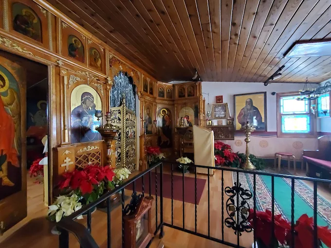

Your First Visit
If you have never been inside an Orthodox church, this page tells you everything you need to know. It is not very much.
The simplest advice is this: come on a Sunday morning a little before 9:30, come in, and stand near the back where you can see. Nobody will ask you who you are, nobody will make you introduce yourself in front of everyone, and nobody will pass a collection plate down your row. When the service ends, someone will almost certainly invite you downstairs for coffee.
The Practical Questions
When should I arrive, and which service should I come to?
For a first visit, the Divine Liturgy on Sunday at 9:30 AM is the best place to start. Arriving five or ten minutes early gives you time to get your bearings. If you would rather come to something shorter and quieter first, the Vigil on Saturday at 6:00 PM is beautiful and less busy.
How long is the service?
The Sunday Liturgy usually runs about two hours, and the Saturday Vigil something under two. If you need to leave early, simply step out quietly — it is better to come for part of a service than not to come at all.
Do people really stand the whole time?
Standing is the normal posture for Orthodox prayer, and there are no pews down the middle of the church. There are benches and chairs along the walls, and anyone who needs to sit should sit without a second thought — the elderly, the pregnant, the unwell, and the visitor whose legs have simply had enough.
What should I wear?
Modest, ordinary clothes are right. Many of the women wear skirts or dresses and cover their heads with a scarf, and many of the men wear a collared shirt. If you arrive in something else, no one will say a word to you — it is far better that you came.
Will I be able to understand anything?
Some of the service is in English and some in Church Slavonic, the old liturgical language of the Russian Church. The sermon is preached in Russian and in English, so you will always hear the teaching in your own language. The parts you do not follow are worth simply listening to.
Can I receive Communion?
Holy Communion is given to Orthodox Christians who have prepared by prayer, fasting and confession. If you are not Orthodox, you are still entirely welcome to be present and to pray — and at the end of the service you may come up to receive the blessed bread, which is given to everyone. If you are Orthodox and wish to commune, please come by 9:00 AM for confession.
What about my children?
Children belong in church and they are not expected to be silent statues. Ours move about, look at the icons, and are taken out and brought back in as needed. Please do not stay home because you are worried about the noise.
Where do I park?
On the street. Parking is permitted on one side of Hathaway Lane only, so please read the signs before you leave the car. It is often easiest to drive to the end of the street, turn around, and park on the permitted side; Regis Drive is another option, also with parking on one side.
What happens after the service?
A meal, and a long conversation. This is where you will actually meet the parish, and where any questions you have are best asked. Stay if you can.
I think I want to become Orthodox. What do I do?
Come to the services for a while, and speak with the rector. There is no course to sign up for and no hurry: the ordinary path is to keep coming, to read, and to talk with the priest as questions arise.

A few customs, if you are curious
On entering, many people light a candle and place it before an icon, and make the sign of the cross. Candles are usually available near the entrance for a small offering. None of this is required of a visitor.
You will see people venerate the icons with a kiss, bow, and at certain moments make a full prostration. The simplest thing is to watch and to do nothing you are not ready to do.
Directions to the church →Still have a question?
Call us at (763) 744-8601 or write to rusmnch@msn.com. There is no question too basic to ask.